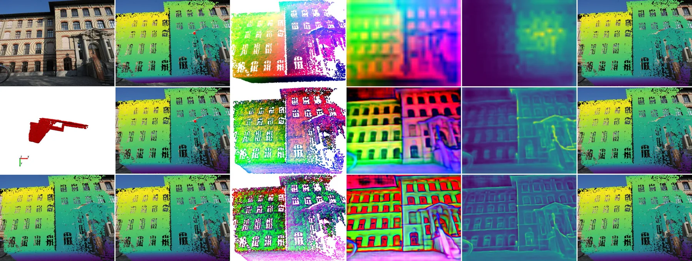
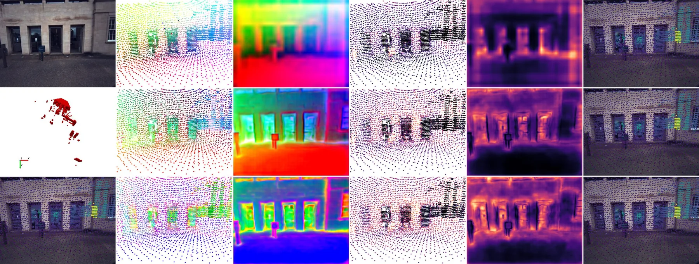
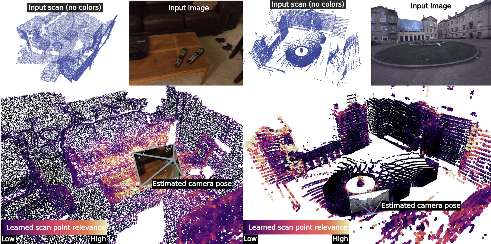
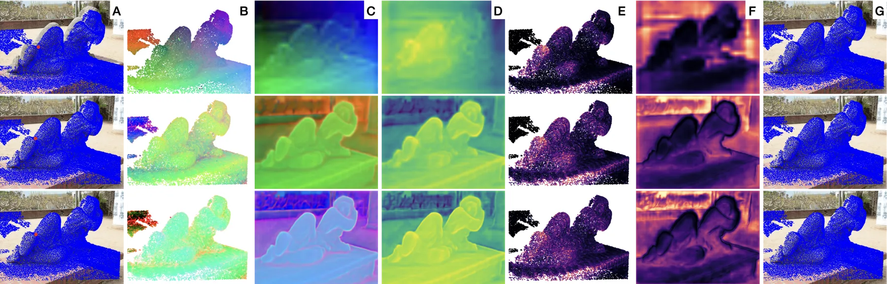

DRS-VPT：用视觉点 Transformer 直接在扫描中重定位
DRS-VPT: Directly Relocalizing in a Scan with Vision Point Transformers
DRS-VPT 将查询图像与参考点云放入同一前馈 Transformer，直接预测 scan pose、camera point maps 与 coarse-to-fine 对齐特征。
作者、单位与技术谱系 · Research context
作者与单位
研究脉络
- 几何基础模型谱系方法上游关系：论文沿用前馈多视图几何/3D 表征作为上游基座。[论文官方 HTML]
- 本篇方法本篇推进关系：在上游几何表示上加入任务特化解码、对齐或自校正。[论文官方 HTML]
合作网络
- 署名—论文项目Lanke Frank Tarimo Fu → DRS-VPT: Directly Relocalizing in a Scan with Vision Point Transformers关系：共同署名/官方项目[论文官方 HTML]
- 论文—实验数据DRS-VPT: Directly Relocalizing in a Scan with Vision Point Transformers → 论文列出的实验数据集关系：公开实验依赖[论文官方 HTML]
作者和单位是原文事实；技术脉络是基于论文引用与公开项目页的来源化解读；未据此推断导师或师生关系。
方法本质拆解 · What actually changed
是不是微调？
论文使用专门训练或蒸馏的前馈模型；冻结范围、训练轮数和完整数据配方需按原文实现细节核验。
有没有额外约束？
模型在首帧坐标系表达相机姿态和点图，并预测 per-point/per-pixel 特征，用直接 reprojective feature-metric alignment 统一标定与重定位。 额外约束作用于几何一致性、跨模态对齐或时序稳定性；没有证据显示加入传统因子图。
推理/后端到底做了什么？
推理阶段执行前馈预测，并可能包含轻量 refinement、特征对齐或缓存；是否迭代及具体预算以原文为准。
方法本质是什么？
论文使用专门训练或蒸馏的前馈模型；冻结范围、训练轮数和完整数据配方需按原文实现细节核验。 该设计把可观测证据转成几何约束或时序合并动作，再作用于位姿、结构或表征输出。
输入观测 + 专门表示/几何约束 + 前馈或轻量校正 → 产生可迁移的空间输出。

动机与问题Motivation
动机与问题
DRS-VPT 将查询图像与参考点云放入同一前馈 Transformer，直接预测 scan pose、camera point maps 与 coarse-to-fine 对齐特征。 论文针对前馈几何、稀疏视角或语言部件理解中的具体瓶颈展开。
方法Method
方法总览
模型在首帧坐标系表达相机姿态和点图，并预测 per-point/per-pixel 特征，用直接 reprojective feature-metric alignment 统一标定与重定位。
关键技术细节
模型在首帧坐标系表达相机姿态和点图，并预测 per-point/per-pixel 特征，用直接 reprojective feature-metric alignment 统一标定与重定位。 关键模块之间通过几何、时序或跨模态特征保持一致性。

实验Experiments
实验设置
任务覆盖 autonomous-driving image-to-LiDAR registration、Oxford Spires 室内重定位、12scenes 未见训练环境和未见环境零样本迁移；具体误差与数据规模待核验。 实验使用论文列出的公开/自建数据与对照方法，指标和协议以原文为准。
实验数字与比较
任务覆盖 autonomous-driving image-to-LiDAR registration、Oxford Spires 室内重定位、12scenes 未见训练环境和未见环境零样本迁移；具体误差与数据规模待核验。 其中未在当前摘录中展开的逐表对照标记为待核验。
消融/失败边界
论文包含模块消融或边界讨论；去掉核心模块的精确变化待核验。输入稀疏、动态、遮挡、长时程或分布外场景可能削弱效果。
局限与迁移Limitations & Transfer
局限与待核验
依赖参考扫描质量、初始尺度/坐标约定和跨域几何；论文指出去掉 reprojective alignment 会影响性能，但精确幅度待核验。
与你研究路线的关系
可迁移“图像—扫描—位姿”统一输出到相机-LiDAR 标定和地图重定位的可靠性评估。
{kind=link}

{kind=link}

{kind=link}
